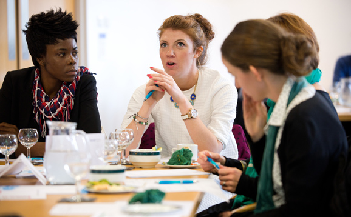
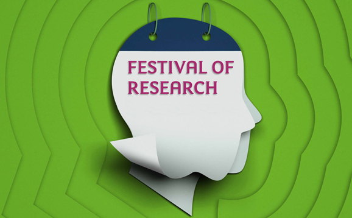
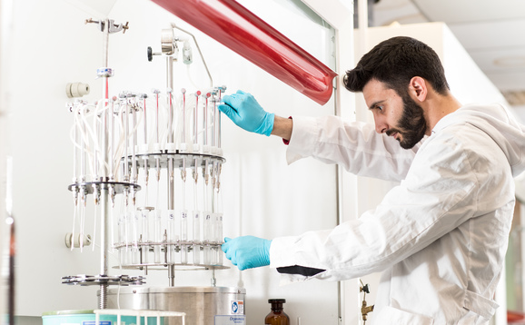
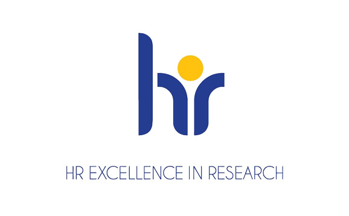

Research culture
Here at the University of Stirling, we have put considerable effort over the last few years into explicitly supporting a healthy research culture. This is an ongoing process and it will be a core element to the University Research Strategy that we are currently developing. We believe that encouraging a supportive culture of collaboration and teamwork will allow all of our staff to achieve their potential.
The Royal Society say “Research culture encompasses the behaviours, values, expectations, attitudes and norms of our research communities. It influences researchers' career paths and determines the way that research is conducted and communicated.”
There are several different themes which contribute to research culture, these include: Staff at all levels acting as good role models and demonstrating fair, collaborative and supportive behaviour; A framework for the expectations, communication and support for good research integrity and ethics practices; Clear processes for two-way communication between all groups and within and across different parts of the University; Provision of the right facilities, support and infrastructure to enable the research to be carried out effectively and well. As we think of practical solutions to help with this, we need to ensure equality, diversity and inclusion considerations are embedded within them.
Why does it matter?
There is evidence that high-performance research units are built on a strong, inclusive culture and an open and transparent set of values. There is also evidence that more diverse teams and happier staff are both more productive and a positive research culture should lead to both of those.
We therefore anticipate that if we can get the research culture right across the institution then that will improve performance in terms of grant income, high quality publications and impact.
The right research culture should benefit staff across all career stages and will support staff to regain or retain research momentum as we emerge from the COVID-19 crisis into a complex and challenging external environment.
Latest on Twitter
Initiatives to enhance research culture
In order to promote a healthy research culture across the University, we are engaged in a wide range of activities designed to ensure everyone's voice is heard and everyone's efforts are recognised. Here are just some of the initiatives helping to enhance our research culture.

Research Environment Group
The Research Environment Group (REG) aims to consider and develop our research environment and culture. It is responsible for coordinating both the delivery of the Concordat to Support the Career Development of Researchers and the HR Excellence in Research Award action plans and the biennial benchmarking survey Culture, Employment and Development of Academic Researchers. REG has 19 members and a cross Faculty representation of both academic and professional services staff, and works to refresh and reinvigorate institutional policies and practices and co-design best endeavours to target support to the researcher community.

Festival of Research
The Festival of Research is an annual series of events committed to stimulating discussion around topics of interest to the researcher community and a platform for researchers to learn more about the diverse nature of research across our own University and beyond. The Festival includes the Research Culture Awards; an opportunity to value those traits which are not captured by traditional metrics and to recognise people and groups who positively contribute to a vibrant and collaborative research culture here at Stirling.

Amplifying your voice
We want to make sure everyone involved in research at the University has a voice. We conduct and participate in regular major surveys of research staff, including the Culture, Employment and Development in Academic Research Survey, and the Research Integrity Survey. By gathering and sharing results, we seek to be open about the challenges we face and the areas we need to improve on. Other forums, such as our Café Culture Conversation, offer regular face-to-face opportunities to feed into institutional policies around research and create solutions for change.
See our research culture timeline
| Year | Activity |
|---|---|
| 2011 | First awarded the HR Excellence in research award |
| Joined the Athena SWAN charter | |
| 2013 | Institutional bronze Athena SWAN award |
| All staff expected to comply with open access policy for publications and Stirling Open Access and Article processing fund created | |
| 2014 | Research data management policy |
| 2015 | DataSTORRE launched and policy developed |
| 2016 | Move from divisional to cross faculty ethics panels |
| 2017 | First Festival of Research |
| Signed the Concordat on the openness of animal research | |
| 2019 | Appointed Dean for Research engagement and performance and Dean for the Institute for Advanced Studies |
| Institute for Advanced Studies approved | |
| Research and Innovation services were restructured with 2 posts specifically for ethics and integrity | |
| Subscribed to UK Research Integrity Office | |
| Initial Research culture survey | |
| 2020 | Signed up to the Declaration on Research Assessment (DORA) which is about using responsible metrics to assess researchers |
| Festival of Research with a research culture theme including the first Research culture awards | |
| Signed the concordat to support the Career Development of Researchers | |
| The new Ethics Review Manager system was launched | |
| Mini festival of research and survey on research integrity was run | |
| ECR coffee and Café Culture conversations introduced | |
| Covid 19 bite sized public lectures developed | |
| Be Connected programme for all staff and students developed | |
| 2021 | ECR teams channel set up to improve communication to that group. |
| Festival of Research | |
| Research Culture Awards | |
| Planned for 2021 | 3 year roadmap for research ethics and integrity |
| Action plan for the concordat for researcher development by autumn |
Our commitments
We have signed a number of agreements and concordats all of which demonstrate our commitment to providing a fair and supportive research culture and environment. This includes ensuring fair processes for assessing researchers and providing appropriate support for researchers throughout their careers.
Promoting a healthy environment for all
We are committed to The Concordat to Support the Career Development of Researchers. Our Research Environment Group oversees implementation of our obligations under the Concordat by providing support to the researcher community, with mental health and wellbeing, research culture, inclusivity and personal and professional career development at the heart of this endeavour. As part of a two-year action plan, we are proactively working with staff to gather views, create targeted resources and offer training support and time to address the changing needs of researchers.
Enhancing research excellence
The University of Stirling signed the San Francisco Declaration on Open Research (DORA) in March 2020 to underline our commitment to enhancing research excellence. By signing DORA, we are highlighting our concern over the use of quantitative indicators as a proxy for research quality and that we want to put forward a fair and transparent mechanism for monitoring and reporting research performance.

Encouraging feedback and embracing change
We have received the HR Excellence in Research Award, which recognises that the University is committed to supporting researchers in their careers, improving the quality and impact of research and encouraging internal culture change. Our Research Environment Group is responsible for coordinating the delivery of our HR Excellence in Research action plans, and does so through initiatives such as our Culture, Employment and Development of Academic Researcher benchmarking survey.
Join our research community
See the latest research job opportunities available at the University of Stirling.